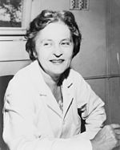

Biography
 Telkes worked as a biophysicist in the United States, but was born in Budapest, Hungary. She moved to the United States after completing her Ph.D. in physical chemistry. From 1939 to 1953 she was involved in solar energy research at the Massachusetts Institute of Technology. Maria is known for creating the first thermoelectric power generator in 1947. Telkes is also known for designing the first solar heating system for the Dover Sun House in Dover, and the first thermoelectric refrigerator in 1953 using the principles of semiconductor thermoelectricity. Maria was an amazing inventor of practical thermal devices, including a miniature desalination unit for use on lifeboats, which used solar power and condensation to collect potable solar still. This still saved the lives of airmen and sailors who would have been without water when abandoned at sea. Telkes is considered one of the founders of solar thermal storage systems, which her the nickname "the Sun Queen". She moved to Texas in the 1970s and was involved with many different solar start up companies.